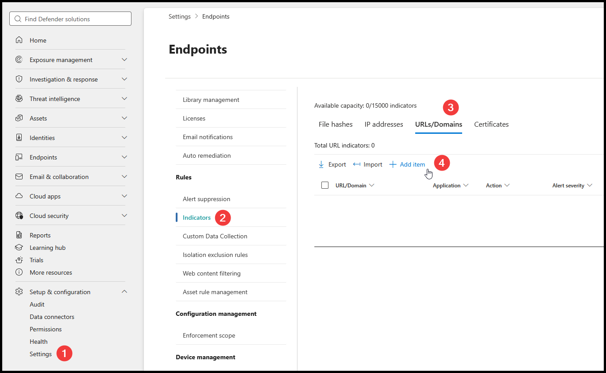

Import Defender IOCs
1. Download
Exclude trusted tools. Enable Include IOC exports. Download every CSV.
Set RbacGroups to your pilot Defender device group in each CSV.
2. Enable protection
- Settings → Endpoints → Advanced features → Custom network indicators: On.
- Network protection: block mode.
- Defender Antivirus: active mode, cloud protection and behavior monitoring enabled.
3. Import
Defender → Settings → Endpoints → Indicators → URLs/Domains.

Import → Choose file. Select a CSV, then Import.
Repeat for every batch, then Done. Limit: 500 indicators per CSV.
4. Verify
- Resolve import errors before continuing.
- Check imported rows under URLs/Domains and IP addresses.
- Confirm device scope and blocking action.
- Test blocked and excluded tools on pilot devices.
Expand device scope after testing.
Existing indicators
Exclusions do not delete existing blocks. Remove obsolete indicators in Defender.